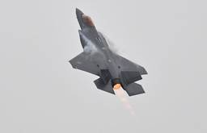
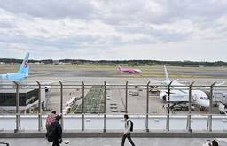
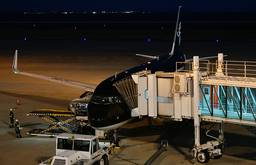
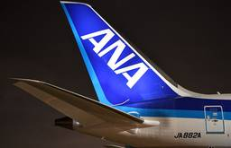
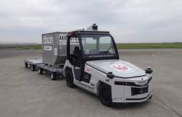

Aviation Wire
https://www.aviationwire.jp
航空経済紙「Aviation Wire」は、航空機やエアライン、空港、官公庁に関する情報や各種統計などをお届けして参ります。
フィード
ZIPAIR、CA有志がハロウィンイベント 成田で出発客と交流
Aviation Wire
ZIPAIR（ジップエア、TZP/ZG）は10月31日、成田空港の搭乗口前で社員有志によるハロウィンイベントを開いた。ロサンゼルス行きZG24便など3便を対象に、客室乗務員とグランドスタッフ（地上旅客係員）の2業務を担 […]
10時間前

米国防総省、F-35を10年間で最低850機調達へ ロッキード70億ドル投資 1
1
Aviation Wire
米国防総省とロッキード・マーチン（LM）は、ステルス戦闘機F-35「ライトニングII」を米軍向けに10年間で最低850機調達する枠組み合意を締結した。LMはF-35計画を支える事業に自己資金で少なくとも70億ドルを投資 […]
16時間前

成田空港、訪日客微減1157万人＝26年度上期
Aviation Wire
成田国際空港会社（NAA）の2026年度上期（4-9月期）運用状況速報値によると、国際線と国内線を合わせた総旅客数は1％増の2091万8667人で、年度上期として歴代3番目の水準を記録した。このうち、訪日客は前年同期微 […]
18時間前
JAL国際線、旅客4カ月連続前年割れ 利用率78.5％＝9月実績
Aviation Wire
日本航空（JAL/JL、9201）の2026年9月利用実績によると、国際線の旅客数は前年同月比7.3％減の60万7409人で、4カ月連続で前年同月を下回った。座席供給量を示すASK（有効座席キロ）は1.8％減の43億1 […]
18時間前

スターフライヤー、国際線利用率78.8％ 国内線旅客7.2％増14万人＝9月実績
Aviation Wire
スターフライヤー（SFJ/7G、9206）の2026年9月利用実績は、国内線の旅客数が前年同月比7.2％増の14万3140人、提供座席数は0.9％増の17万204席、ロードファクター（座席利用率、L/F）は5.4ポイン […]
18時間前
トキエアがATR72予約登録 国交省航空機登録26年9月分
Aviation Wire
国土交通省航空局（JCAB）によると、2026年9月の航空機登録は、予約登録受付が3機、新規登録が7機、移転登録が11機、変更登録が4機、抹消登録が4機で、予約登録取り下げはなかった。 予約登録受付では、トキエア（T […]
18時間前
JALとジェイエア、自社養成パイロット業務体験 27年1月合同開催
Aviation Wire
日本航空（JAL/JL、9201）と、グループで伊丹空港を拠点とするジェイエア（JAR/XM）は10月30日、自社養成パイロットの業務体験（旧インターンシップ）を2027年1月に合同開催すると発表した。今年度の冬季プロ […]
1日前

ANA、不正アクセス影響3.8万人 1700人はパスポート番号も＝アマデウス問題
Aviation Wire
ANAホールディングス（ANAHD、9202）傘下の全日本空輸（ANA/NH）は10月30日、スペインの航空IT大手アマデウスのシステムが不正アクセスを受けた問題で、影響を受けた可能性のある顧客が約3万7800人に上る […]
1日前

JALと豊田自動織機、羽田でトラクター無人運転拡大へ トンネル含むルート検証
Aviation Wire
日本航空（JAL/JL、9201）と豊田自動織機は10月30日、羽田空港で完全無人運転の「自動運転レベル4」の運用範囲拡大に向けた検証を11月から始めると発表した。豊田自動織機製の自動運転トーイングトラクター（けん引車 […]
2日前
ANA、新個室ビジネス787「THE Room FX」早期受領へ調整
Aviation Wire
全日本空輸（ANA/NH）を傘下に持つANAホールディングス（ANAHD、9202）の芝田浩二社長は10月29日、新ビジネスクラスシート「THE Room FX（ザ・ルームFX）」を搭載するボーイング787-9型機の国 […]
2日前